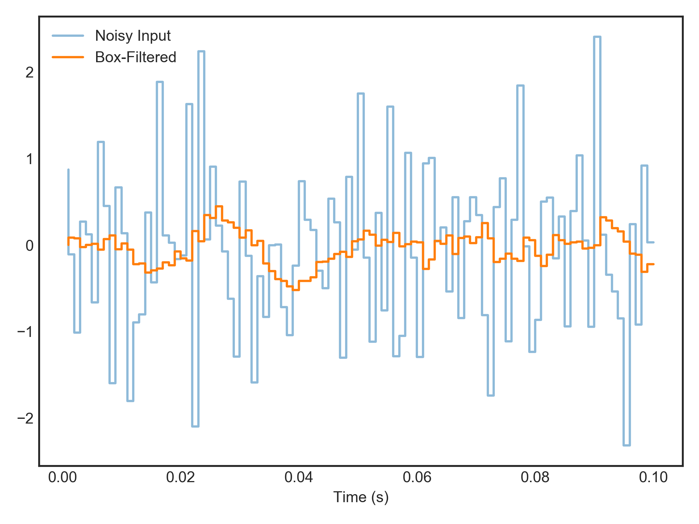

nengolib.synapses.BoxFilter¶
-
nengolib.synapses.BoxFilter(width, normalized=True)[source]¶ A discrete box-filter with a given
width, and optionally unit area.This filter is also known as a “box blur”, and has the effect of smoothing out the input signal by taking its rolling mean over a finite number of time-steps. Its properties are qualitatively similar to the continuous-time
Lowpass().Parameters: - width :
integer Width of the box-filter (in time-steps).
- normalized :
boolean, optional If
True, then the height of the box-filter is1/width, otherwise1. Defaults toTrue.
Returns: - :class:`.LinearSystem`
Digital system implementing the box-filter.
Examples
Simulate a Nengo network using a box filter of 10 ms for a synapse:
>>> from nengolib.synapses import BoxFilter >>> import nengo >>> with nengo.Network() as model: >>> stim = nengo.Node(output=lambda _: np.random.randn(1)) >>> p_stim = nengo.Probe(stim) >>> p_box = nengo.Probe(stim, synapse=BoxFilter(10)) >>> with nengo.Simulator(model) as sim: >>> sim.run(.1)
>>> import matplotlib.pyplot as plt >>> plt.step(sim.trange(), sim.data[p_stim], label="Noisy Input", alpha=.5) >>> plt.step(sim.trange(), sim.data[p_box], label="Box-Filtered") >>> plt.xlabel("Time (s)") >>> plt.legend() >>> plt.show()
- width :